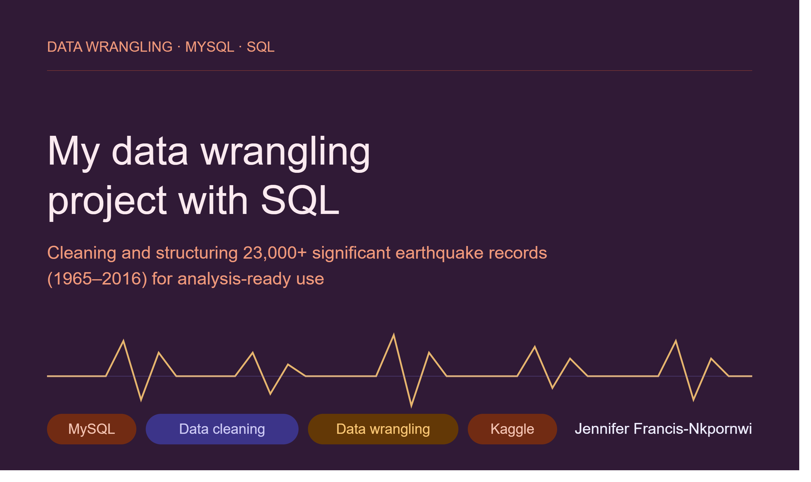

A raw, messy, 23,000-row public dataset — cleaned and restructured in SQL until it was actually fit to analyze.

Before any earthquake trend can be analyzed, the raw data has to be trustworthy. This Kaggle dataset of 23,000+ significant earthquakes from 1965–2016 came with inconsistent formatting, missing values, and structural issues that would have produced misleading results if analyzed as-is. The question wasn't "what do earthquakes trends look like" yet — it was "is this data even usable?"
Data wrangling is the unglamorous half of analysis that decides whether everything downstream can be trusted. I worked entirely in MySQL to get this dataset from raw export to analysis-ready.
The project's framing slide — the scope of the raw dataset before cleaning began.
The output is a dataset that's actually safe to build on — consistent types, validated ranges, and no silent duplicates or blank fields quietly skewing an eventual trend analysis. It's a deliberately unglamorous project, and that's the point: I wanted a portfolio piece that shows I won't skip the cleaning step just because it's less visually interesting than a finished dashboard.
Want the full breakdown — queries, data model, or wireframes?
View full repo on GitHub